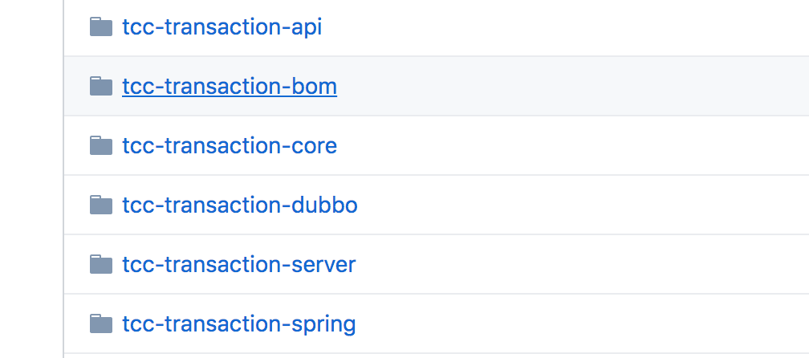

- 00 开篇词：搭建分布式知识体系，挑战高薪 Offer.md.html
- 01 如何证明分布式系统的 CAP 理论？.md.html
- 02 不同数据一致性模型有哪些应用？.md.html
- 03 如何透彻理解 Paxos 算法？.md.html
- 04 ZooKeeper 如何保证数据一致性？.md.html
- 05 共识问题：区块链如何确认记账权？.md.html
- 06 如何准备一线互联网公司面试？.md.html
- 07 分布式事务有哪些解决方案？.md.html
- 08 对比两阶段提交，三阶段协议有哪些改进？.md.html
- 09 MySQL 数据库如何实现 XA 规范？.md.html
- 10 如何在业务中体现 TCC 事务模型？.md.html
- 11 分布式锁有哪些应用场景和实现？.md.html
- 12 如何使用 Redis 快速实现分布式锁？.md.html
- 13 分布式事务考点梳理 + 高频面试题.md.html
- 14 如何理解 RPC 远程服务调用？.md.html
- 15 为什么微服务需要 API 网关？.md.html
- 16 如何实现服务注册与发现？.md.html
- 17 如何实现分布式调用跟踪？.md.html
- 18 分布式下如何实现配置管理？.md.html
- 19 容器化升级对服务有哪些影响？.md.html
- 20 ServiceMesh：服务网格有哪些应用？.md.html
- 21 Dubbo vs Spring Cloud：两大技术栈如何选型？.md.html
- 22 分布式服务考点梳理 + 高频面试题.md.html
- 23 读写分离如何在业务中落地？.md.html
- 24 为什么需要分库分表，如何实现？.md.html
- 25 存储拆分后，如何解决唯一主键问题？.md.html
- 26 分库分表以后，如何实现扩容？.md.html
- 27 NoSQL 数据库有哪些典型应用？.md.html
- 28 ElasticSearch 是如何建立索引的？.md.html
- 29 分布式存储考点梳理 + 高频面试题.md.html
- 30 消息队列有哪些应用场景？.md.html
- 31 集群消费和广播消费有什么区别？.md.html
- 32 业务上需要顺序消费，怎么保证时序性？.md.html
- 33 消息幂等：如何保证消息不被重复消费？.md.html
- 34 高可用：如何实现消息队列的 HA？.md.html
- 35 消息队列选型：Kafka 如何实现高性能？.md.html
- 36 消息队列选型：RocketMQ 适用哪些场景？.md.html
- 37 消息队列考点梳理 + 高频面试题.md.html
- 38 不止业务缓存，分布式系统中还有哪些缓存？.md.html
- 39 如何避免缓存穿透、缓存击穿、缓存雪崩？.md.html
- 40 经典问题：先更新数据库，还是先更新缓存？.md.html
- 41 失效策略：缓存过期都有哪些策略？.md.html
- 42 负载均衡：一致性哈希解决了哪些问题？.md.html
- 43 缓存高可用：缓存如何保证高可用？.md.html
- 44 分布式缓存考点梳理 + 高频面试题.md.html
- 45 从双十一看高可用的保障方式.md.html
- 46 高并发场景下如何实现系统限流？.md.html
- 47 降级和熔断：如何增强服务稳定性？.md.html
- 48 如何选择适合业务的负载均衡策略？.md.html
- 49 线上服务有哪些稳定性指标？.md.html
- 50 分布式下有哪些好用的监控组件？.md.html
- 51 分布式下如何实现统一日志系统？.md.html
- 52 分布式路漫漫，厚积薄发才是王道.md.html
- 捐赠
10 如何在业务中体现 TCC 事务模型？
在分布式系统设计中，随着微服务的流行，通常一个业务操作被拆分为多个子任务，比如电商系统的下单和支付操作，就涉及到了创建和更新订单、扣减账户余额、扣减库存、发送物流消息等，那么在复杂业务开发中，如何保证最终数据一致性呢？
TCC 事务模型是什么
TCC（Try-Confirm-Cancel）的概念来源于 Pat Helland 发表的一篇名为“Life beyond Distributed Transactions:an Apostate’s Opinion”的论文。
TCC 提出了一种新的事务模型，基于业务层面的事务定义，锁粒度完全由业务自己控制，目的是解决复杂业务中，跨表跨库等大颗粒度资源锁定的问题。TCC 把事务运行过程分成 Try、Confirm / Cancel 两个阶段，每个阶段的逻辑由业务代码控制，避免了长事务，可以获取更高的性能。
TCC 的各个阶段
TCC 的具体流程如下图所示：

Try 阶段：调用 Try 接口，尝试执行业务，完成所有业务检查，预留业务资源。
Confirm 或 Cancel 阶段：两者是互斥的，只能进入其中一个，并且都满足幂等性，允许失败重试。
- Confirm 操作：对业务系统做确认提交，确认执行业务操作，不做其他业务检查，只使用 Try 阶段预留的业务资源。
- Cancel 操作：在业务执行错误，需要回滚的状态下执行业务取消，释放预留资源。
Try 阶段失败可以 Cancel，如果 Confirm 和 Cancel 阶段失败了怎么办？
TCC 中会添加事务日志，如果 Confirm 或者 Cancel 阶段出错，则会进行重试，所以这两个阶段需要支持幂等；如果重试失败，则需要人工介入进行恢复和处理等。
应用 TCC 的优缺点
实际开发中，TCC 的本质是把数据库的二阶段提交上升到微服务来实现，从而避免数据库二阶段中长事务引起的低性能风险。
所以说，TCC 解决了跨服务的业务操作原子性问题，比如下订单减库存，多渠道组合支付等场景，通过 TCC 对业务进行拆解，可以让应用自己定义数据库操作的粒度，可以降低锁冲突，提高系统的业务吞吐量。
TCC 的不足主要体现在对微服务的侵入性强，TCC 需要对业务系统进行改造，业务逻辑的每个分支都需要实现 try、Confirm、Cancel 三个操作，并且 Confirm、Cancel 必须保证幂等。
另外 TCC 的事务管理器要记录事务日志，也会损耗一定的性能。
从真实业务场景分析 TCC
下面以一个电商中的支付业务来演示，用户在支付以后，需要进行更新订单状态、扣减账户余额、增加账户积分和扣减商品操作。
在实际业务中为了防止超卖，有下单减库存和付款减库存的区别，支付除了账户余额，还有各种第三方支付等，这里我们为了描述方便，统一使用扣款减库存，扣款来源是用户账户余额。

业务逻辑拆解
我们把订单业务拆解为以下几个步骤：
- 订单更新为支付完成状态
- 扣减用户账户余额
- 增加用户账户积分
- 扣减当前商品的库存
如果不使用事务，上面的几个步骤都可能出现失败，最终会造成大量的数据不一致，比如订单状态更新失败，扣款却成功了；或者扣款失败，库存却扣减了等情况，这个在业务上是不能接受的，会出现大量的客诉。
如果直接应用事务，不使用分布式事务，比如在代码中添加 Spring 的声明式事务 @Transactional 注解，这样做实际上是在事务中嵌套了远程服务调用，一旦服务调用出现超时，事务无法提交，就会导致数据库连接被占用，出现大量的阻塞和失败，会导致服务宕机。另一方面，如果没有定义额外的回滚操作，比如遇到异常，非 DB 的服务调用失败时，则无法正确执行回滚。
业务系统改造
下面应用 TCC 事务，需要对业务代码改造，抽象 Try、Confirm 和 Cancel 阶段。
- Try 操作
Try 操作一般都是锁定某个资源，设置一个预备的状态，冻结部分数据。比如，订单服务添加一个预备状态，修改为 UPDATING，也就是更新中的意思，冻结当前订单的操作，而不是直接修改为支付成功。
库存服务设置冻结库存，可以扩展字段，也可以额外添加新的库存冻结表。积分服务和库存一样，添加一个预增加积分，比如本次订单积分是 100，添加一个额外的存储表示等待增加的积分，账户余额服务等也是一样的操作。
- Confirm 操作
Confirm 操作就是把前边的 Try 操作锁定的资源提交，类比数据库事务中的 Commit 操作。在支付的场景中，包括订单状态从准备中更新为支付成功；库存数据扣减冻结库存，积分数据增加预增加积分。
- Cancel 操作
Cancel 操作执行的是业务上的回滚处理，类比数据库事务中的 Rollback 操作。首先订单服务，撤销预备状态，还原为待支付状态或者已取消状态，库存服务删除冻结库存，添加到可销售库存中，积分服务也是一样，将预增加积分扣减掉。
执行业务操作
下面来分析业务的实际执行操作，首先业务请求过来，开始执行 Try 操作，如果 TCC 分布式事务框架感知到各个服务的 Try 阶段都成功了以后，就会执行各个服务的 Confirm 逻辑。
如果 Try 阶段有操作不能正确执行，比如订单失效、库存不足等，就会执行 Cancel 的逻辑，取消事务提交。
TCC 对比 2PC 两阶段提交
TCC 事务模型的思想类似 2PC 提交，下面对比 TCC 和基于 2PC 事务 XA 规范对比。
对比 2PC 提交

- 第一阶段
在 XA 事务中，各个 RM 准备提交各自的事务分支，事实上就是准备提交资源的更新操作（insert、delete、update 等）；而在 TCC 中，是主业务操作请求各个子业务服务预留资源。
- 第二阶段
XA 事务根据第一阶段每个 RM 是否都 prepare 成功，判断是要提交还是回滚。如果都 prepare 成功，那么就 commit 每个事务分支，反之则 rollback 每个事务分支。
在 TCC 中，如果在第一阶段所有业务资源都预留成功，那么进入 Confirm 步骤，提交各个子业务服务，完成实际的业务处理，否则进入 Cancel 步骤，取消资源预留请求。
与 2PC/XA 两阶段提交的区别
- 2PC/XA 是数据库或者存储资源层面的事务，实现的是强一致性，在两阶段提交的整个过程中，一直会持有数据库的锁。
- TCC 关注业务层的正确提交和回滚，在 Try 阶段不涉及加锁，是业务层的分布式事务，关注最终一致性，不会一直持有各个业务资源的锁。
TCC 的核心思想是针对每个业务操作，都要添加一个与其对应的确认和补偿操作，同时把相关的处理，从数据库转移到业务中，以此实现跨数据库的事务。
TCC 分布式服务组件
在业务中引入 TCC 一般是依赖单独的 TCC 事务框架，可以选择自研或者应用开源组件。TCC 框架扮演了资源管理器的角色，常用的 TCC 开源组件有 Tcc-transaction、ByteTCC、Spring-cloud-rest-tcc 等。
前面介绍过的 Seata，可以选择 TCC 事务模式，也支持了 AT 模式及 Saga 模式。
以 Tcc-transaction 为例，源码托管在 Github-tcc-transaction，提供了对 Spring 和 Dubbo 的适配，感兴趣的话可以查看 tcc-transaction-tutorial-sample 学习。

总结
这一课时介绍了 TCC 分布式事务模型的应用，通过一个实际例子分析了如何应用 TCC 对业务系统进行改造，并且对比了 TCC 和 2PC 两阶段提交，以及 TCC 相关的开源组件。
© 2019 - 2023 Liangliang Lee. Powered by gin and hexo-theme-book.